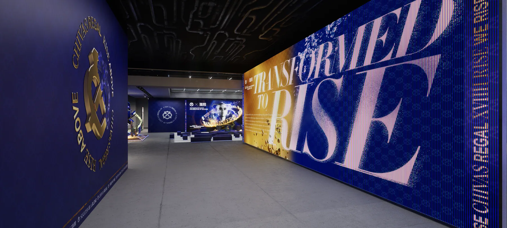

Dựng không khí trong Blender: sáu node là đủ

Dựng không khí trong Blender không bắt đầu từ model, mà bắt đầu từ việc quyết định cái gì không cần dựng. Andrew Price dựng lại cảnh Backrooms và cho biết khoảng 90% hiệu quả đến từ sáu node, không model, không UV unwrap. Bài này mổ cách làm đó và chỉ ra phần bạn mang được sang job thật.
Viết từ chỗ ngồi dựng bối cảnh cho phim quảng cáo và phối cảnh sự kiện mỗi tuần. Không phải bài khoe mẹo, mà là bài về thứ tự ưu tiên: tiền và thời gian nên đổ vào đâu trong một cảnh mà người xem chỉ nhìn hai giây.
Dựng không khí trong Blender thực chất là dựng cái gì
Không khí là thứ người xem cảm được trước khi kịp đọc chi tiết. Nó đến từ ba thứ, và cả ba đều không đòi hỏi bạn model giỏi.
- Sự lặp lại. Một hành lang dài, một dãy cột, một trần đèn đều tăm tắp. Lặp lại tạo cảm giác không gian còn kéo dài ngoài khung hình.
- Ánh sáng có tính cách. Bẹt và xanh thì thành bệnh viện, ấm và lệch một bên thì thành chiều muộn. Đèn quyết định cảm xúc nhanh hơn mọi thứ khác.
- Chiều sâu nhìn thấy được. Một lớp sương mỏng, bụi trong luồng sáng, hoặc đơn giản là vật ở xa mờ hơn vật ở gần.
Ba thứ đó cộng lại là khoảng tám phần mười cảm giác của một cảnh nền. Phần còn lại, tức chi tiết bề mặt và đồ đạc nhỏ, là phần người mới thường đổ hết thời gian vào, rồi ngạc nhiên vì ảnh vẫn chưa ra.
Andrew Price dựng cảnh Backrooms bằng gì
Theo mô tả trên 80 Level: tường được sinh ra bằng tính toán thay vì model thủ công, đường đi tạo từ texture, các khoảng khoét bằng khối hộp, texture áp bằng projection thay vì UV. Nhóm node chính gồm Grid, Greater Than, Mesh to Curve, Quadrilateral và Curve to Mesh. Đường đi được điều khiển bằng cách chỉnh scale của Noise Texture.
Phần render đi qua Cycles, chỉnh màu bằng RGB curve, thêm film grain cho chất analog, và thêm glare khi compositing. Giá trị shader được nối vào Geometry Nodes để bật tắt đèn và tạo sự ngẫu nhiên cho các tấm đèn trần.
Dịch sang tiếng Việt dễ hiểu
Một lưới được tạo ra, một phần lưới bị lọc bỏ theo nhiễu để thành đường đi, phần còn lại được kéo lên thành tường. Bạn không vẽ mê cung, bạn mô tả luật sinh ra mê cung rồi để máy dựng. Đổi một con số là có một mặt bằng khác, trong khi dựng tay thì đổi bố cục đồng nghĩa với làm lại.
Phần đáng học không phải là sáu node
Nếu bạn chép lại đúng cụm node đó, bạn có một cảnh Backrooms. Hết. Thứ mang đi được là câu hỏi đặt ra trước khi mở Blender: cảnh này thật ra cần gì để thuyết phục?
Backrooms thuyết phục nhờ sự lặp lại đến mức bất an, ánh sáng huỳnh quang bẹt, và cảm giác không gian kéo dài vô tận. Không thứ nào trong ba thứ đó đòi hỏi model chi tiết. Nhận ra điều đó cho phép bỏ qua phần lớn khối lượng công việc mà không mất gì.
Trước khi hỏi làm thế nào, hỏi cảnh này thật sự cần gì. Câu trả lời thường ngắn hơn bạn tưởng.
Đây cũng là lý do kỹ năng đọc hình được xếp trước kỹ năng phần mềm trong lộ trình tự học Blender. Biết cái gì không cần dựng tiết kiệm nhiều giờ hơn mọi phiêm tắt bạn học được trong một năm.
Khi nào dựng bằng node, khi nào phải model thật
Đây là phần hay bị bỏ qua khi người học xem xong một video mẹo. Cách làm procedural rất mạnh ở đúng chỗ của nó và gây hại ở chỗ khác.
| Loại cảnh | Nên dựng bằng | Lý do |
|---|---|---|
| Hành lang, kho, bãi đỗ xe, nội thất công nghiệp | Node và đèn | Người xem cảm tổng thể, không soi chi tiết |
| Nền phía sau chủ thể trong ảnh sản phẩm | Node và đèn | Nền chỉ cần đúng vệt phản chiếu và đúng độ mờ |
| Sản phẩm nằm ở tiền cảnh | Model thật, có bản vẽ | Mọi cạnh bông và đường ghép đều bị khách soi |
| Gian hàng, sân khấu phải thi công được | Model theo kích thước thật | Bản vẽ phải khớp vật tư và kết cấu |
| Cảnh cần đổi bố cục nhiều lần theo góp ý | Node | Đổi một tham số nhanh hơn dựng lại |
Nói ngắn: node lo phần không ai soi, model lo phần khách trả tiền để soi. Trong một job dịch vụ render 3D sản phẩm, hai cách này luôn đi cặp nhau chứ không thay thế nhau. Với phối cảnh sự kiện 3D, ranh giới còn rõ hơn nữa vì bản vẽ còn phải mang đi thi công.

Bốn chi tiết nhỏ làm nên không khí
Box projection thay cho UV
Với bề mặt phẳng và lặp lại, projection cho kết quả đủ tốt và tiết kiệm hoàn toàn khâu UV. Đây là thứ nhiều người học Blender không biết mình được phép bỏ qua. Mẹo nhỏ: đặt blend của box projection khoảng 0.2 để góc tường không lộ đường cắt.
Ngẫu nhiên hoá đèn trần
Một vài tấm đèn tắt, một vài tấm sáng yếu hơn. Chi tiết rất nhỏ nhưng là thứ tách cảnh CG khỏi cảnh trông như thật, vì sự đều tăm tắp là dấu hiệu của máy tính. Nguyên tắc này áp được cho mọi thứ lặp lại: gạch sàn, ghế, vệt bẩn.
Một lớp sương rất mỏng
Volumetric là con dao hai lưỡi. Đủ mỏng thì nó tách lớp gần khỏi lớp xa và cho luồng đèn một hình dạng. Quá tay thì cảnh đục như sương mù và thời gian render tăng gấp nhiều lần. Nếu máy bạn chậm, các cách render nhanh hơn trong Blender Cycles chỉ rõ phần volumetric nào cắt được mà không ai nhận ra.
Film grain và glare ở cuối
Hai thứ này thêm ở khâu compositing, nhưng chỉ hiệu quả khi ánh sáng bên dưới đã đúng. Nếu bạn thấy mình dựa vào grain để cảnh đỡ giả, vấn đề nằm ở đèn. Năm lỗi hay gặp nhất mình viết trong bài học lighting trong Blender, và gần như lần nào chữa bài cũng gặp ít nhất hai trong số đó.
Danh sách kiểm tra trước khi render cảnh không khí
- Thu nhỏ ảnh bằng móng tay. Còn đọc được không gian thì bố cục đã đứng.
- Che chủ thể đi xem nền có tự sống không. Nền nhạt nhẽo khi che chủ thể là nền chưa làm việc.
- Đếm số nguồn sáng. Trên bốn nguồn trong một cảnh không khí thường là dấu hiệu đang chữa cháy.
- Tắt volumetric một lần để so. Nếu tắt đi mà cảnh vẫn đứng, bạn đang dùng sương đúng liều.
- Kiểm tra độ lặp. Tìm một vết bẩn hoặc một tấm đèn hỏng lặp lại đúng chu kỳ, đó là thứ mắt người bắt được.
- Xuất thử ở độ phân giải thấp trước. Mọi lỗi bố cục đều hiện ra ở bản nháp, không cần chờ bản cuối.
- Lưu một phiên bản trước khi thêm grain. Để còn so được cảnh trần và cảnh đã xử lý.
Cách làm này không giải quyết được gì
Nói thật phần bất lợi, vì các video mẹo thường bỏ qua.
Thứ nhất, cảnh procedural rất khó chỉnh cục bộ. Khách muốn dịch một cái cột sang trái nửa mét thì bạn phải thêm cả một nhánh node để làm ngoại lệ. Dựng tay thì chỉ cần kéo chuột. Với cảnh có nhiều vòng sửa theo ý khách, cân nhắc trước.
Thứ hai, file node phức tạp khó bàn giao. Người nhận file của bạn phải hiểu cả cây node mới sửa được. Trong một ê kíp, đó là chi phí thật. Hãy đặt tên node group và phơi ra ngoài vài tham số chính, coi như làm một bảng điều khiển cho người sau.
Thứ ba, nó không dạy bạn model. Nếu bạn đang ở giai đoạn chưa dựng nổi một món đồ để đưa lên tiền cảnh, thì mấy cụm node này không lấp được khoảng trống đó. Phần nền đẹp mà chủ thể xấu là một kiểu ảnh rất dễ nhận ra. Muốn chữa đúng chỗ đó thì đi đường dài hơn: luyện dựng hình đều tay, và nếu cần người chữa bài thì một khoá học render tử tế sẽ nhanh hơn tự mò nhiều tháng.
Thứ tư, nó không làm thay việc lên kịch bản hình. Trong một job dựng TVC 3D, thứ tự công việc vẫn là chốt góc máy trước, rồi mới dựng cái gì lọt khung. Node chỉ giúp bước sau đó rẻ hơn.
Bài tập 90 phút
Lấy một không gian bạn từng dựng thủ công và tự hỏi: nếu chỉ được dùng năm node, phần nào của cảnh này thật sự cần thiết? Viết câu trả lời ra giấy trước khi mở Blender.
Sau đó dựng lại trong 90 phút với luật chơi: không model thủ công vật nào, không UV, tối đa ba nguồn sáng. Hết giờ thì render một khung ở độ phân giải thấp và đặt cạnh bản cũ. Phần lớn người làm bài này nhận ra bản 90 phút đọc được không gian rõ hơn bản họ tốn ba buổi.
Nếu máy bạn đuối khi bật volumetric, xem trước bài cấu hình máy học Blender để biết phần nào nên giảm khi luyện. Còn nếu bạn định đi sâu vào mảng hard-surface, danh sách add-on hard-surface Blender nên cài giúp bạn khỏi rải tiền vào thứ chưa dùng tới.
Hỏi đáp nhanh
Dựng không khí trong Blender có cần máy mạnh không?
Phần dựng thì không, vì cảnh kiểu này hầu như không có model chi tiết. Phần nặng là volumetric và số bounce khi render, cả hai đều giảm được mà người xem không nhận ra.
Không biết Geometry Nodes thì bắt đầu từ đâu?
Bắt đầu từ một cụm bốn năm node giải quyết đúng một việc, ví dụ rải cột theo một đường. Học theo kiểu đi hết danh sách node thường bỏ giữa chừng vì không thấy dùng vào đâu.
Cách làm này có dùng được cho job thương mại không?
Dùng được cho nền và bối cảnh, không dùng được cho chủ thể ở tiền cảnh. Đây cũng là cách một studio chia thời gian: nền làm nhanh, chủ thể làm kỹ.
Bỏ UV unwrap có sao không?
Với bề mặt phẳng và lặp lại như tường, sàn, trần thì box projection đủ tốt. Chỉ cần UV khi bề mặt cong, có đường may, hoặc khi phải đặt nhãn và chữ vào đúng vị trí.
Làm sao biết cảnh đã đủ không khí hay chưa?
Thu nhỏ ảnh xuống bằng móng tay rồi nhìn. Nếu vẫn đọc được không gian và vẫn thấy chỗ sáng chỗ tối rõ rệt thì đã đủ. Nếu phải phóng to mới thấy hay, cảnh đang dựa vào chi tiết chứ không dựa vào không khí.
Bài tập 90 phút ở trên thuộc nhóm bài luyện mắt mà hai hệ ở trang khoá học 3D Blender cho làm ngay tuần đầu, vì nó lọc ra rất nhanh ai đang dựng theo thói quen và ai dựng theo ý đồ. Tự luyện thì checklist trong cẩm nang Blender đủ dùng, miễn là bạn chịu viết ra câu trả lời trước khi mở file tham chiếu.
Nguồn tham khảo
Bài viết là phân tích và quan điểm riêng của LXAM Studio, dựa trên thông tin từ các nguồn dưới đây. Bấm vào để đọc bản gốc.
Đọc tiếp

Muốn được sửa bài trực tiếp?
Coaching 1:1 online, đồng hành trọn một năm. Để lại thông tin, tôi xem qua và tư vấn bạn nên bắt đầu từ đâu.
Đăng ký tư vấn